kuvakierros
Galleria
Kurkista sisään: juhlasali, vintage-kahvila, aula, keittiö, WC-tilat ja punainen puutalo pihapiireineen. Klikkaa kuvaa nähdäksesi sen suurempana.
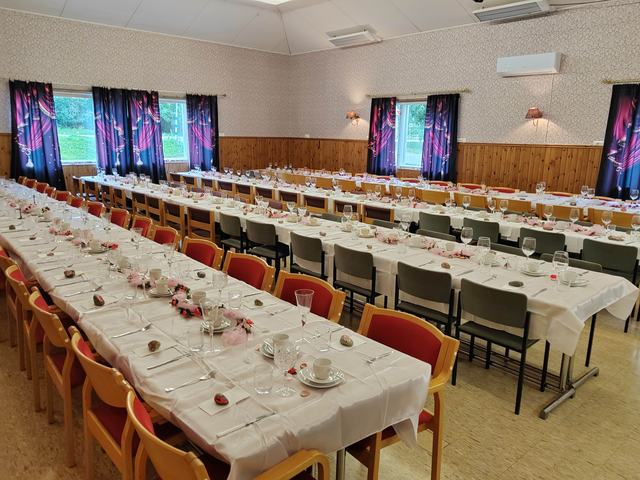
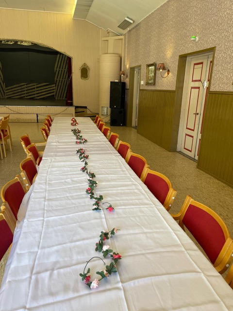
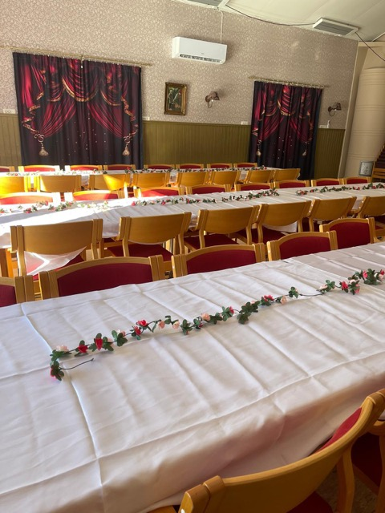
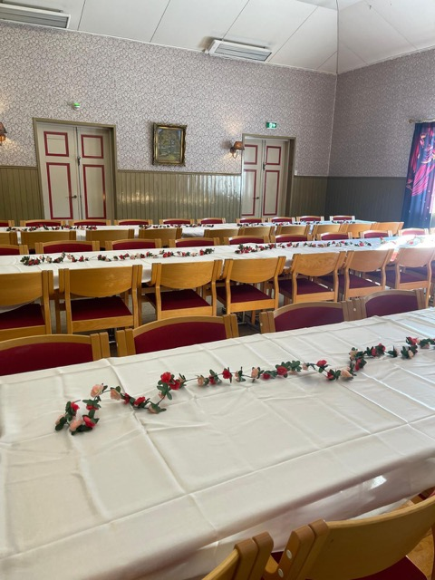
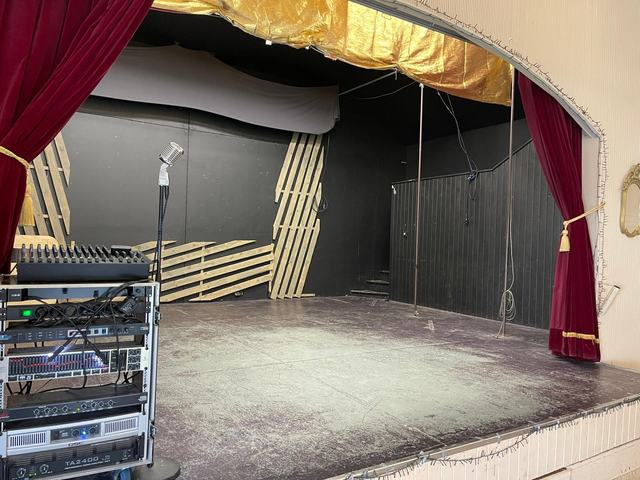
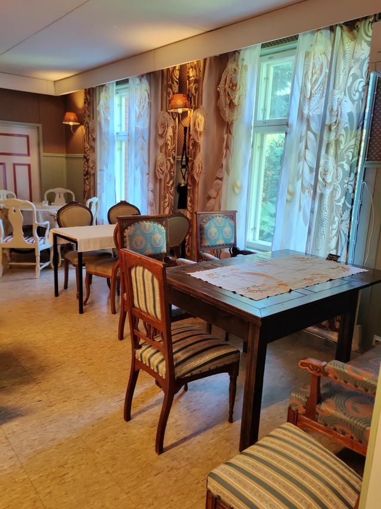
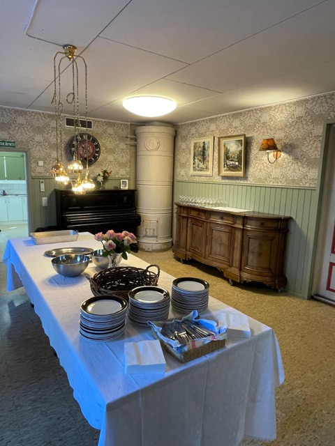
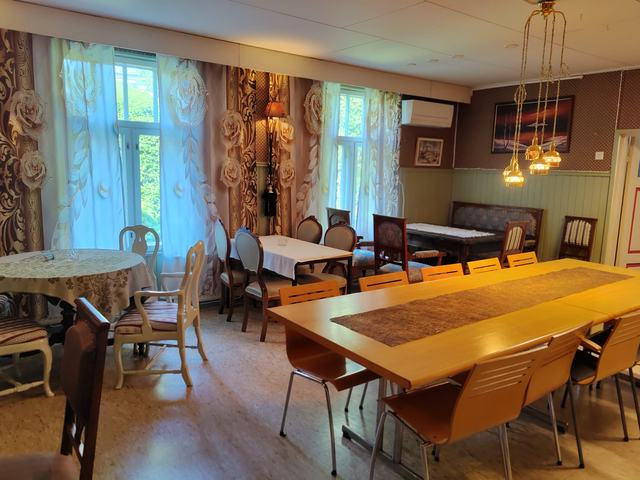
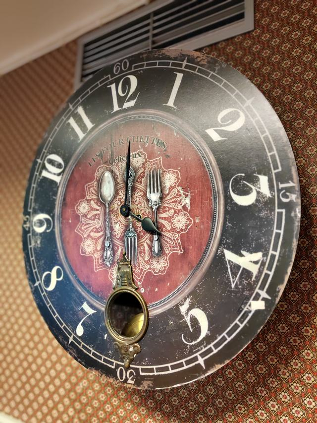
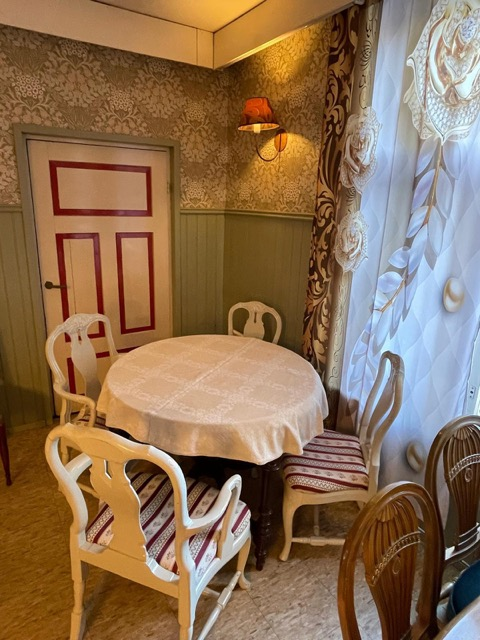
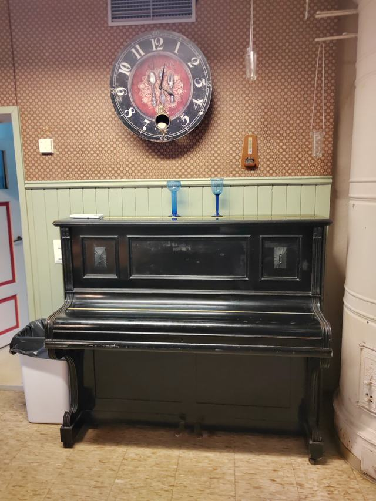
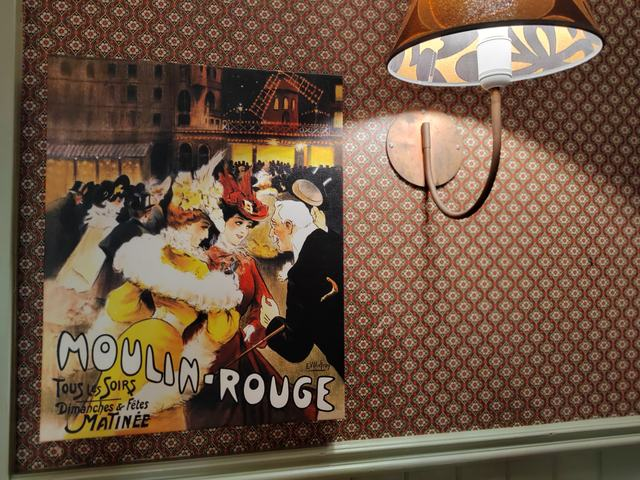

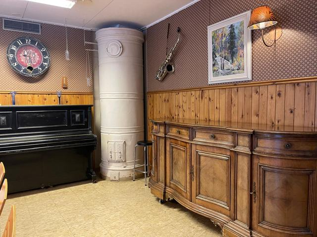
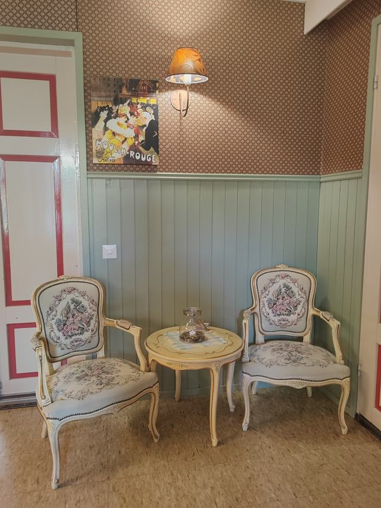
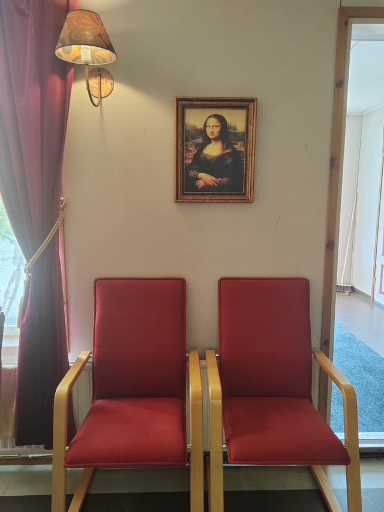
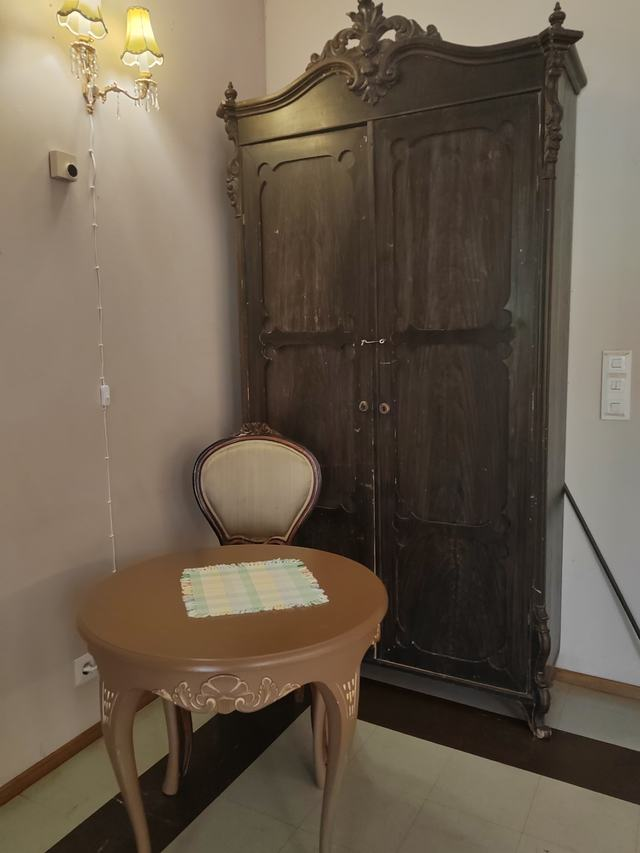
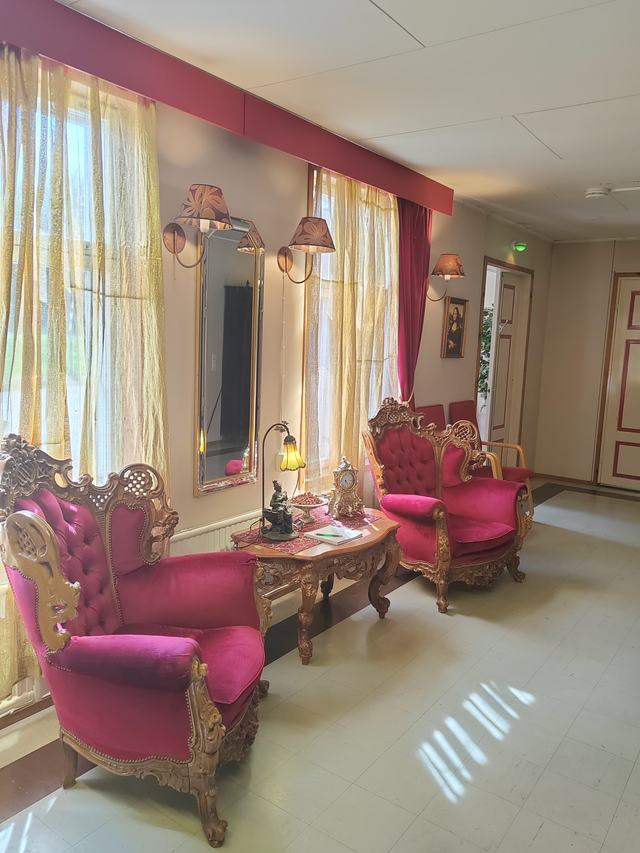
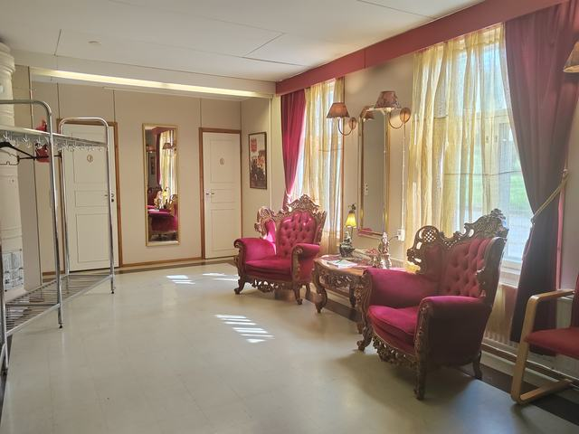
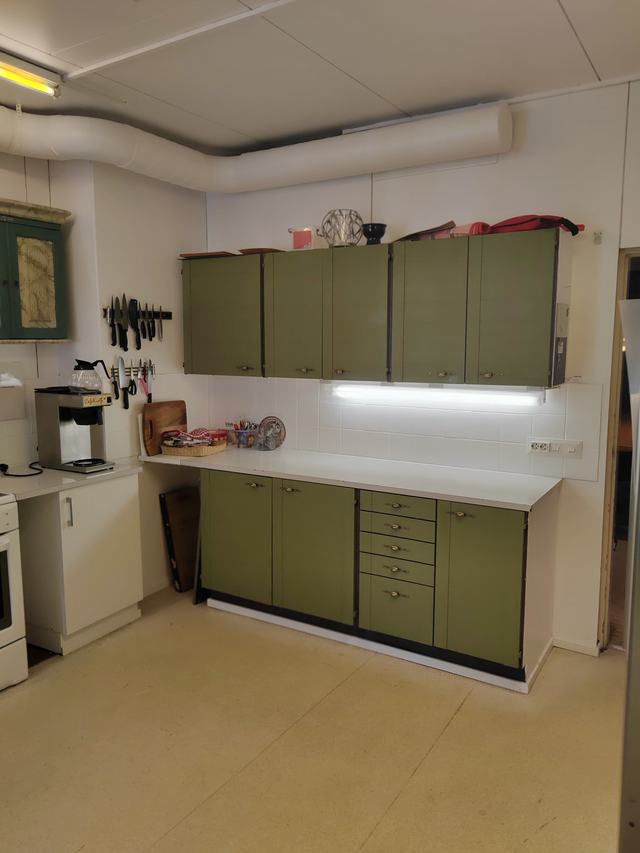
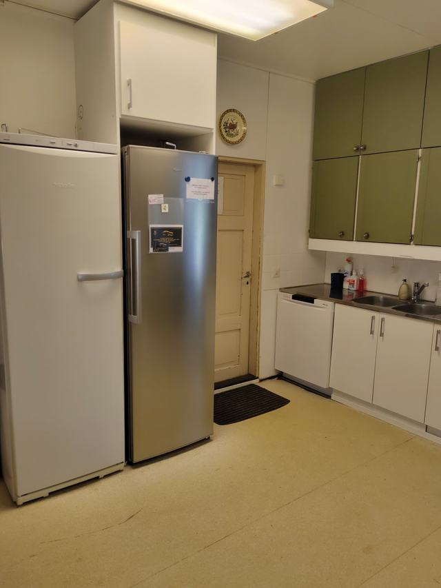
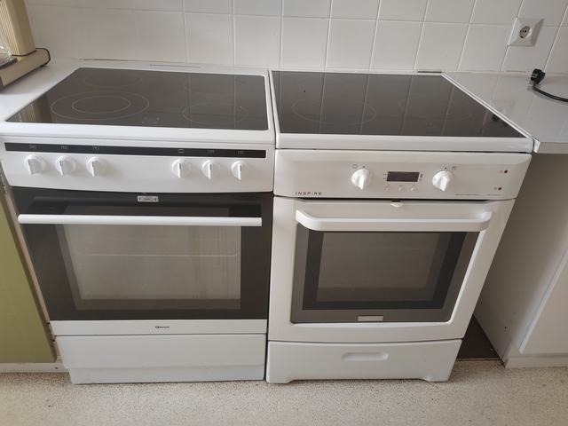
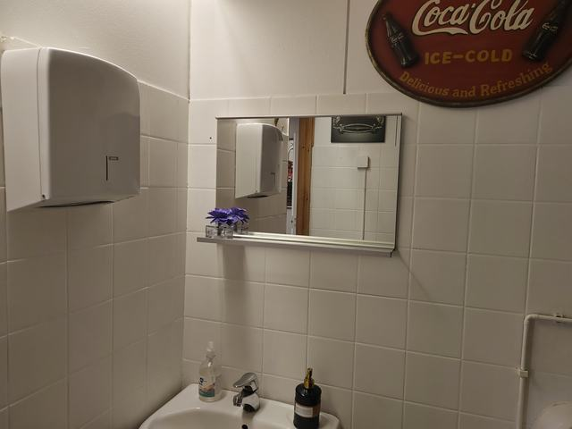
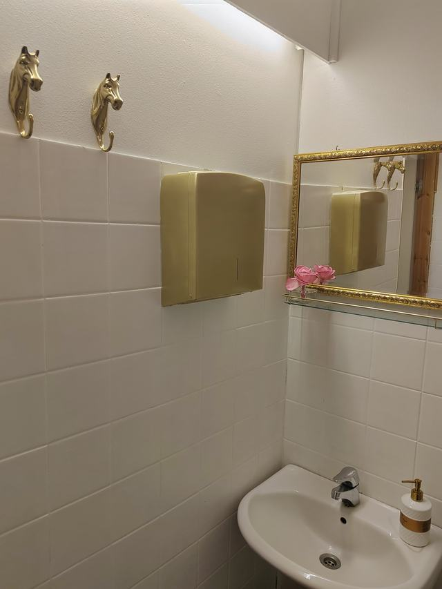

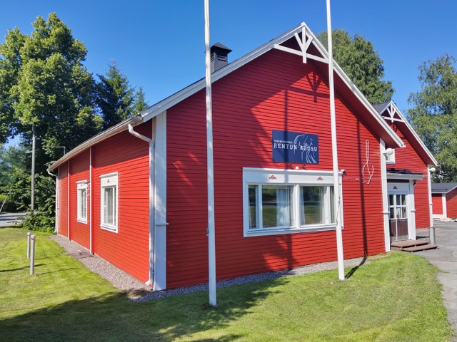
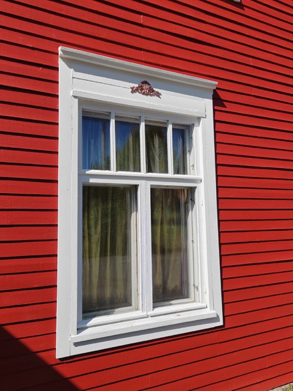
näitkö jotain mieleistä?
Tule katsomaan taloa paikan päälle
Esittelemme tiloja mielellämme — sovi tutustuminen, niin keitetään pannu kahvia valmiiksi.